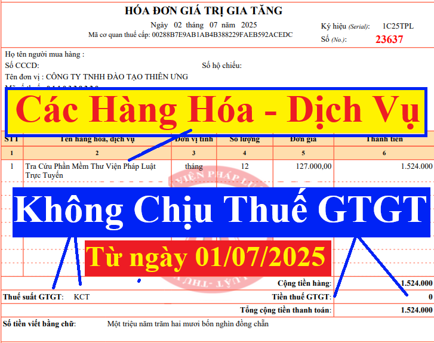

Quy định về những loại hàng hóa dịch vụ không chịu thuế GTGT mới nhất năm 2026 theo Nghị định 181/2025/NĐ-CP và Nghị định 359/2025/NĐ-CP có hiệu lực từ ngày 01/01/2026
Căn cứ pháp lý:
+ Luật thuế GTGT số: 48/2024/QH15 (ban hành ngày 26/11/2024, có hiệu lực từ ngày 01/7/2025)
+ Luật thuế GTGT số: 48/2024/QH15 (ban hành ngày 26/11/2024, có hiệu lực từ ngày 01/7/2025)
+ Nghị định 181/2025/NĐ-CP quy định chi tiết một số điều của Luật Thuế GTGT, ban hành ngày 01/07/2025 có hiệu lực từ ngày 01/7/2025
+ Thông tư 69/2025/TT-BTC quy định chi tiết một số điều của Luật thuế GTGT và hướng dẫn thực hiện Nghị định 181/2025/NĐ-CP, ban hành ngày 01/07/2025 có hiệu lực từ ngày 01/7/2025
+ Nghị định 359/2025/NĐ-CP ngày 31/12/2025 sửa đổi Nghị định 181/2025/NĐ-CP (ban hành ngày 31/12/2025, có hiệu lực thi hành từ ngày 01/01/2026)
+ Nghị định 359/2025/NĐ-CP ngày 31/12/2025 sửa đổi Nghị định 181/2025/NĐ-CP (ban hành ngày 31/12/2025, có hiệu lực thi hành từ ngày 01/01/2026)
Từ năm 2026, những mặt hàng không chịu thuế GTGT gồm có:
I. Các loại hàng hóa dịch vụ không chịu thuế GTGT từ ngày 01/07/2025:
Theo quy định tại điều 5 của Luật thuế GTGT số: 48/2024/QH15 (ban hành ngày 26/11/2024, có hiệu lực từ ngày 01/7/2025) thì:
Điều 5. Đối tượng không chịu thuế
1. Sản phẩm cây trồng, rừng trồng, chăn nuôi, thủy sản nuôi trồng, đánh bắt chưa chế biến thành các sản phẩm khác hoặc chỉ qua sơ chế thông thường của tổ chức, cá nhân tự sản xuất, đánh bắt bán ra và ở khâu nhập khẩu.
Khoản này được sửa đổi bởi Điểm a Khoản 1 Điều 1 Luật Thuế giá trị gia tăng sửa đổi 2025 có hiệu lực từ ngày 01/01/2026
“1. Sản phẩm cây trồng, rừng trồng, chăn nuôi, thủy sản nuôi trồng, đánh bắt chưa chế biến thành các sản phẩm khác hoặc chỉ qua sơ chế thông thường của tổ chức, cá nhân tự sản xuất, đánh bắt bán ra và ở khâu nhập khẩu.
Doanh nghiệp, hợp tác xã, liên hiệp hợp tác xã mua sản phẩm cây trồng, rừng trồng, chăn nuôi, thủy sản nuôi trồng, đánh bắt chưa chế biến thành các sản phẩm khác hoặc chỉ qua sơ chế thông thường bán cho doanh nghiệp, hợp tác xã, liên hiệp hợp tác xã khác thì không phải kê khai, tính nộp thuế giá trị gia tăng nhưng được khấu trừ thuế giá trị gia tăng đầu vào.
2. Sản phẩm giống vật nuôi theo quy định của pháp luật về chăn nuôi, vật liệu nhân giống cây trồng theo quy định của pháp luật về trồng trọt.
3. Thức ăn chăn nuôi theo quy định của pháp luật về chăn nuôi; thức ăn thủy sản theo quy định của pháp luật về thủy sản.
4. Sản phẩm muối được sản xuất từ nước biển, muối mỏ tự nhiên, muối tinh, muối i-ốt mà thành phần chính là Na-tri-clo-rua (NaCl).
5. Nhà ở thuộc tài sản công do Nhà nước bán cho người đang thuê.
6. Tưới, tiêu nước; cày, bừa đất; nạo vét kênh, mương nội đồng phục vụ sản xuất nông nghiệp; dịch vụ thu hoạch sản phẩm nông nghiệp.
7. Chuyển quyền sử dụng đất.
8. Bảo hiểm nhân thọ, bảo hiểm sức khỏe, bảo hiểm người học, các dịch vụ bảo hiểm khác liên quan đến con người; bảo hiểm vật nuôi, bảo hiểm cây trồng, các dịch vụ bảo hiểm nông nghiệp khác; bảo hiểm tàu, thuyền, trang thiết bị và các dụng cụ cần thiết khác phục vụ trực tiếp đánh bắt thủy sản; tái bảo hiểm; bảo hiểm các công trình, thiết bị dầu khí, tàu chứa dầu mang quốc tịch nước ngoài do nhà thầu dầu khí hoặc nhà thầu phụ nước ngoài thuê để hoạt động tại vùng biển Việt Nam, vùng biển chồng lấn mà Việt Nam và các quốc gia có bờ biển tiếp liền hay đối diện đã thỏa thuận đặt dưới chế độ khai thác chung.
9. Các dịch vụ tài chính, ngân hàng, kinh doanh chứng khoán, thương mại sau đây:
a) Dịch vụ cấp tín dụng theo quy định của pháp luật về các tổ chức tín dụng và các khoản phí được nêu cụ thể tại Hợp đồng vay vốn của Chính phủ Việt Nam với Bên cho vay nước ngoài;
b) Dịch vụ cho vay của người nộp thuế không phải là tổ chức tín dụng;
c) Kinh doanh chứng khoán bao gồm môi giới chứng khoán, tự doanh chứng khoán, bảo lãnh phát hành chứng khoán, tư vấn đầu tư chứng khoán, quản lý quỹ đầu tư chứng khoán, quản lý danh mục đầu tư chứng khoán theo quy định của pháp luật về chứng khoán;
d) Chuyển nhượng vốn bao gồm chuyển nhượng một phần hoặc toàn bộ số vốn đã đầu tư vào tổ chức kinh tế khác (không phân biệt có thành lập hay không thành lập pháp nhân mới), chuyển nhượng chứng khoán, chuyển nhượng quyền góp vốn và các hình thức chuyển nhượng vốn khác theo quy định của pháp luật, kể cả trường hợp bán doanh nghiệp cho doanh nghiệp khác để sản xuất, kinh doanh và doanh nghiệp mua kế thừa toàn bộ quyền và nghĩa vụ của doanh nghiệp bán theo quy định của pháp luật. Chuyển nhượng vốn quy định tại điểm này không bao gồm chuyển nhượng dự án đầu tư, bán tài sản;
đ) Bán nợ bao gồm bán khoản phải trả và khoản phải thu;
e) Kinh doanh ngoại tệ;
g) Sản phẩm phái sinh theo quy định của pháp luật về các tổ chức tín dụng, pháp luật về chứng khoán và pháp luật về thương mại, bao gồm: hoán đổi lãi suất; hợp đồng kỳ hạn; hợp đồng tương lai; hợp đồng quyền chọn mua, chọn bán và sản phẩm phái sinh khác;
h) Bán tài sản bảo đảm của khoản nợ của tổ chức mà Nhà nước sở hữu 100% vốn điều lệ do Chính phủ thành lập có chức năng mua, bán nợ để xử lý nợ xấu của các tổ chức tín dụng Việt Nam.
10. Các dịch vụ y tế, dịch vụ thú y sau đây:
a) Dịch vụ y tế bao gồm: dịch vụ khám bệnh, chữa bệnh, phòng bệnh cho người, dịch vụ sinh đẻ có kế hoạch, dịch vụ điều dưỡng sức khoẻ, phục hồi chức năng cho người bệnh; dịch vụ chăm sóc người cao tuổi, người khuyết tật; vận chuyển người bệnh, dịch vụ cho thuê phòng bệnh, giường bệnh của các cơ sở y tế; xét nghiệm, chiếu, chụp; máu và chế phẩm máu dùng cho người bệnh.
Dịch vụ chăm sóc người cao tuổi, người khuyết tật bao gồm cả chăm sóc về y tế, dinh dưỡng và tổ chức các hoạt động văn hóa, thể thao, giải trí, vật lý trị liệu, phục hồi chức năng cho người cao tuổi, người khuyết tật.
Trường hợp trong gói dịch vụ chữa bệnh theo quy định của Bộ Y tế bao gồm cả sử dụng thuốc chữa bệnh thì khoản thu từ tiền thuốc chữa bệnh nằm trong gói dịch vụ chữa bệnh cũng thuộc đối tượng không chịu thuế giá trị gia tăng;
b) Dịch vụ thú y bao gồm: dịch vụ khám bệnh, chữa bệnh, phòng bệnh cho vật nuôi.
11. Dịch vụ tang lễ.
12. Hoạt động duy tu, sửa chữa, xây dựng bằng nguồn vốn đóng góp của nhân dân, vốn viện trợ nhân đạo (chiếm từ 50% tổng số vốn sử dụng cho công trình trở lên) đối với các di tích lịch sử - văn hóa, danh lam thắng cảnh, các công trình văn hóa, nghệ thuật, công trình phục vụ công cộng, cơ sở hạ tầng và nhà ở cho đối tượng chính sách xã hội.
13. Hoạt động dạy học, dạy nghề theo quy định của pháp luật về giáo dục, giáo dục nghề nghiệp.
14. Phát sóng truyền thanh, truyền hình bằng nguồn vốn ngân sách nhà nước.
15. Xuất bản, nhập khẩu, phát hành báo, tạp chí, bản tin, đặc san, sách chính trị, sách giáo khoa, giáo trình, sách văn bản pháp luật, sách khoa học - kỹ thuật, sách phục vụ thông tin đối ngoại, sách in bằng chữ dân tộc thiểu số và tranh, ảnh, áp phích tuyên truyền cổ động, kể cả dưới dạng băng hoặc đĩa ghi tiếng, ghi hình, dữ liệu điện tử; tiền, in tiền.
16. Vận chuyển hành khách công cộng bằng xe buýt, tàu điện, phương tiện thủy nội địa.
17. Máy móc, thiết bị, phụ tùng, vật tư thuộc loại trong nước chưa sản xuất được cần nhập khẩu để sử dụng trực tiếp cho hoạt động nghiên cứu khoa học, phát triển công nghệ; máy móc, thiết bị, phụ tùng thay thế, phương tiện vận tải chuyên dùng và vật tư thuộc loại trong nước chưa sản xuất được cần nhập khẩu để tiến hành hoạt động tìm kiếm thăm dò, phát triển mỏ dầu khí; máy bay, trực thăng, tàu lượn, giàn khoan, tàu thuyền thuộc loại trong nước chưa sản xuất được cần nhập khẩu để tạo tài sản cố định của doanh nghiệp hoặc thuê của nước ngoài để sử dụng cho sản xuất, kinh doanh, cho thuê.
18. Sản phẩm quốc phòng, an ninh theo danh mục do Bộ trưởng Bộ Quốc phòng, Bộ trưởng Bộ Công an ban hành; sản phẩm, dịch vụ nhập khẩu phục vụ công nghiệp quốc phòng, an ninh theo danh mục do Thủ tướng Chính phủ ban hành.
19. Hàng hóa nhập khẩu trong trường hợp viện trợ nhân đạo, viện trợ không hoàn lại. Hàng hóa, dịch vụ bán cho tổ chức, cá nhân nước ngoài, tổ chức quốc tế để viện trợ nhân đạo, viện trợ không hoàn lại cho Việt Nam.
20. Hàng hóa chuyển khẩu, quá cảnh qua lãnh thổ Việt Nam; hàng tạm nhập khẩu, tái xuất khẩu; hàng tạm xuất khẩu, tái nhập khẩu; nguyên liệu nhập khẩu để sản xuất, gia công hàng hóa xuất khẩu theo hợp đồng sản xuất, gia công xuất khẩu ký kết với bên nước ngoài; hàng hóa, dịch vụ được mua bán giữa nước ngoài với các khu phi thuế quan và giữa các khu phi thuế quan với nhau.
Hàng hóa nhập khẩu từ nước ngoài của công ty cho thuê tài chính được vận chuyển thẳng vào khu phi thuế quan để cho doanh nghiệp trong khu phi thuế quan thuê tài chính.
21. Chuyển giao công nghệ theo quy định của Luật Chuyển giao công nghệ; chuyển nhượng quyền sở hữu trí tuệ theo quy định của Luật Sở hữu trí tuệ; sản phẩm phần mềm và dịch vụ phần mềm theo quy định của pháp luật.
22. Vàng dạng thỏi, miếng chưa được chế tác thành sản phẩm mỹ nghệ, đồ trang sức hay sản phẩm khác ở khâu nhập khẩu.
23. Sản phẩm xuất khẩu là tài nguyên, khoáng sản khai thác chưa chế biến thành sản phẩm khác và sản phẩm xuất khẩu là tài nguyên, khoáng sản khai thác đã chế biến thành sản phẩm khác theo Danh mục do Chính phủ quy định phù hợp với định hướng của nhà nước về không khuyến khích xuất khẩu, hạn chế xuất khẩu các tài nguyên, khoáng sản thô.
24. Sản phẩm nhân tạo dùng để thay thế cho bộ phận cơ thể của người bệnh, bao gồm cả sản phẩm là bộ phận cấy ghép lâu dài trong cơ thể người; nạng, xe lăn và dụng cụ chuyên dùng khác cho người khuyết tật.
25. Hàng hóa, dịch vụ của hộ, cá nhân sản xuất, kinh doanh có mức doanh thu hằng năm từ 200 triệu đồng trở xuống; tài sản của tổ chức, cá nhân không kinh doanh, không phải là người nộp thuế giá trị gia tăng bán ra; hàng dự trữ quốc gia do cơ quan dự trữ quốc gia bán ra; các khoản thu phí, lệ phí theo quy định của pháp luật về phí và lệ phí.
Lưu ý: Ngày 11/12/2025, Quốc hội đã Thông qua Luật sửa đổi, bổ sung một số điều của Luật Thuế giá trị gia tăng số 149/2025/QH15.
Theo đó, đã Nâng ngưỡng doanh thu không chịu thuế GTGT lên 500 triệu đồng đối với hộ, cá nhân kinh doanh
Căn cứ điểm b khoản 1 Điều 1 Luật sửa đổi bổ sung một số điều của Luật Thuế giá trị gia tăng 2025 có sửa đổi, bổ sung khoản 25 Điều 5 Luật Thuế giá trị gia tăng 2024 như sau:
Hàng hóa, dịch vụ của hộ, cá nhân sản xuất, kinh doanh có mức doanh thu năm từ 500 triệu đồng trở xuống; tài sản của tổ chức, cá nhân không kinh doanh, không phải là người nộp thuế giá trị gia tăng bán ra; hàng dự trữ quốc gia do cơ quan dự trữ quốc gia bán ra; các khoản thu phí, lệ phí theo quy định của pháp luật về phí và lệ phí.
Luật Thuế giá trị gia tăng số 149/2025/QH15 có hiệu lực từ ngày 01/01/2026
Vậy là: Bắt đầu từ ngày 01/01/2026 trở đi, hộ, cá nhân sản xuất, kinh doanh có mức doanh thu năm từ 500 triệu đồng trở xuống thuộc đối tượng được miễn thuế GTGT (và cũng được miễn thuế TNCN theo Luật thuế TNCN sửa đổi đã được Quốc Hội thông qua ngày 10/12/2025)
Luật Thuế giá trị gia tăng số 149/2025/QH15 có hiệu lực từ ngày 01/01/2026
Vậy là: Bắt đầu từ ngày 01/01/2026 trở đi, hộ, cá nhân sản xuất, kinh doanh có mức doanh thu năm từ 500 triệu đồng trở xuống thuộc đối tượng được miễn thuế GTGT (và cũng được miễn thuế TNCN theo Luật thuế TNCN sửa đổi đã được Quốc Hội thông qua ngày 10/12/2025)
26. Hàng hóa nhập khẩu trong trường hợp sau đây:
a) Quà tặng cho cơ quan nhà nước, tổ chức chính trị, tổ chức chính trị - xã hội, tổ chức chính trị xã hội - nghề nghiệp, tổ chức xã hội, tổ chức xã hội - nghề nghiệp, đơn vị vũ trang nhân dân trong định mức miễn thuế nhập khẩu theo quy định của pháp luật về thuế xuất khẩu, thuế nhập khẩu;
b) Quà biếu, quà tặng trong định mức miễn thuế nhập khẩu theo quy định của pháp luật về thuế xuất khẩu, thuế nhập khẩu của tổ chức, cá nhân nước ngoài cho cá nhân Việt Nam; đồ dùng của tổ chức, cá nhân nước ngoài theo tiêu chuẩn miễn trừ ngoại giao và tài sản di chuyển trong định mức miễn thuế nhập khẩu theo quy định của pháp luật về thuế xuất khẩu, thuế nhập khẩu;
c) Hàng hoá trong tiêu chuẩn hành lý miễn thuế nhập khẩu theo quy định của pháp luật về thuế xuất khẩu, thuế nhập khẩu;
d) Hàng hóa nhập khẩu ủng hộ, tài trợ cho phòng, chống, khắc phục hậu quả thảm họa, thiên tai, dịch bệnh, chiến tranh theo quy định của Chính phủ;
đ) Hàng hóa mua bán, trao đổi qua biên giới để phục vụ cho sản xuất, tiêu dùng của cư dân biên giới thuộc Danh mục hàng hóa mua bán, trao đổi của cư dân biên giới theo quy định của pháp luật và trong định mức miễn thuế nhập khẩu theo quy định của pháp luật về thuế xuất khẩu, thuế nhập khẩu;
e) Di vật, cổ vật, bảo vật quốc gia theo quy định của pháp luật về di sản văn hóa do cơ quan nhà nước có thẩm quyền nhập khẩu.
27. Cơ sở kinh doanh hàng hóa, dịch vụ không chịu thuế giá trị gia tăng quy định tại Điều này không được khấu trừ, không được hoàn thuế giá trị gia tăng đầu vào, trừ trường hợp được áp dụng mức thuế suất 0% quy định tại khoản 1 Điều 9 của Luật này.
28. Chính phủ quy định chi tiết Điều này. Bộ trưởng Bộ Tài chính quy định hồ sơ, thủ tục xác định đối tượng không chịu thuế giá trị gia tăng quy định tại Điều này.
Theo điều 5 của Nghị định 181/2025/NĐ-CP có hiệu lực từ ngày 01/7/2025 thì:
Điều 4. Đối tượng không chịu thuế
Đối tượng không chịu thuế thực hiện theo quy định tại Điều 5 Luật Thuế giá trị gia tăng. Một số trường hợp được quy định chi tiết như sau:
1. Sản phẩm cây trồng, rừng trồng, chăn nuôi, thủy sản nuôi trồng, đánh bắt chưa chế biến thành các sản phẩm khác hoặc chỉ qua sơ chế thông thường của tổ chức, cá nhân tự sản xuất, đánh bắt bán ra và ở khâu nhập khẩu. Trong đó, các sản phẩm chỉ qua sơ chế thông thường là các sản phẩm mới được làm sạch, phơi, sấy khô, bóc vỏ, xay xát, xay vỡ mảnh, nghiền vỡ mảnh, xay bỏ vỏ, xát bỏ vỏ, tách hạt, tách cọng, cắt, xay, đánh bóng hạt, hồ hạt, chia tách ra từng phần, bỏ xương, băm, lột da, nghiền, cán mỏng, ướp muối, đóng hộp kín khí, bảo quản lạnh (ướp lạnh, đông lạnh), bảo quản bằng khí sunfuro, bảo quản theo phương thức cho hóa chất để tránh thối rữa, ngâm trong dung dịch lưu huỳnh hoặc ngâm trong dung dịch bảo quản khác và các hình thức bảo quản thông thường khác.
Trường hợp không xác định được thì Bộ Nông nghiệp và Môi trường có trách nhiệm căn cứ vào quy trình sản xuất sản phẩm cây trồng, rừng trồng, chăn nuôi, thủy sản nuôi trồng, đánh bắt do người nộp thuế cung cấp để xác định là sản phẩm chưa chế biến thành các sản phẩm khác hoặc chỉ qua sơ chế thông thường của tổ chức, cá nhân tự sản xuất, đánh bắt bán ra và ở khâu nhập khẩu theo quy định của pháp luật.
Điều này được bổ sung bởi Khoản 1 Điều 1 Nghị định 359/2025/NĐ-CP có hiệu lực từ ngày 01/01/2026
1. Bổ sung khoản 1b sau khoản 1 Điều 4 như sau:
“1b. Doanh nghiệp, hợp tác xã, liên hiệp hợp tác xã mua sản phẩm cây trồng, rừng trồng, chăn nuôi, thủy sản nuôi trồng, đánh bắt chưa chế biến thành các sản phẩm khác hoặc chỉ qua sơ chế thông thường bán cho doanh nghiệp, hợp tác xã, liên hiệp hợp tác xã khác thì không phải kê khai, tính nộp thuế giá trị gia tăng nhưng được khấu trừ thuế giá trị gia tăng đầu vào.
Trong đó:
a) Doanh nghiệp, hợp tác xã, liên hiệp hợp tác xã nộp thuế giá trị gia tăng theo phương pháp khấu trừ thuế bán sản phẩm cây trồng, rừng trồng, chăn nuôi, thủy sản nuôi trồng, đánh bắt chưa chế biến thành các sản phẩm khác hoặc chỉ qua sơ chế thông thường cho doanh nghiệp, hợp tác xã, liên hiệp hợp tác xã khác ở khâu kinh doanh thương mại thì không phải kê khai, tính nộp thuế giá trị gia tăng.
b) Trường hợp doanh nghiệp, hợp tác xã, liên hiệp hợp tác xã nộp thuế giá trị gia tăng theo phương pháp khấu trừ thuế bán sản phẩm cây trồng, rừng trồng, chăn nuôi, thủy sản nuôi trồng, đánh bắt chưa chế biến thành các sản phẩm khác hoặc chỉ qua sơ chế thông thường cho các đối tượng như hộ, cá nhân sản xuất, kinh doanh và các tổ chức, cá nhân khác thì phải tính thuế giá trị gia tăng theo mức thuế suất 5% quy định tại khoản 3 Điều 19 Nghị định này.
c) Hộ, cá nhân sản xuất, kinh doanh, doanh nghiệp, hợp tác xã, liên hiệp hợp tác xã và tổ chức kinh tế khác nộp thuế giá trị gia tăng theo phương pháp tính trực tiếp khi bán sản phẩm cây trồng, rừng trồng, chăn nuôi, thủy sản nuôi trồng, đánh bắt chưa chế biến thành các sản phẩm khác hoặc chỉ qua sơ chế thông thường ở khâu kinh doanh thương mại thì tính thuế giá trị gia tăng phải nộp theo doanh thu bằng 1% (tỷ lệ %) nhân với doanh thu.
2. Nhà ở thuộc tài sản công do Nhà nước bán cho người đang thuê. Trong đó, nhà ở thuộc tài sản công theo quy định của pháp luật về nhà ở.
3. Chuyển quyền sử dụng đất theo quy định của pháp luật về đất đai.
4. Các dịch vụ tài chính, ngân hàng, kinh doanh chứng khoán, thương mại sau đây:
a) Dịch vụ cấp tín dụng theo quy định của pháp luật về các tổ chức tín dụng và các khoản phí được nêu cụ thể tại Hợp đồng vay vốn của Chính phủ Việt Nam với Bên cho vay nước ngoài.
b) Dịch vụ cho vay của người nộp thuế không phải là tổ chức tín dụng.
c) Kinh doanh chứng khoán bao gồm môi giới chứng khoán, tự doanh chứng khoán, bảo lãnh phát hành chứng khoán, tư vấn đầu tư chứng khoán, quản lý quỹ đầu tư chứng khoán, quản lý danh mục đầu tư chứng khoán theo quy định của pháp luật về chứng khoán.
Điểm này được hướng dẫn bởi Điều 3 Thông tư 77/2025/TT-BTC có hiệu lực từ ngày 30/07/2025 như sau:
Điều 3. Các dịch vụ kinh doanh chứng khoán tại điểm c khoản 4 Điều 4 Nghị định số 181/2025/NĐ-CP
1. Môi giới chứng khoán tại công ty chứng khoán; nhận ủy thác quản lý tài khoản giao dịch chứng khoán của nhà đầu tư cá nhân, quản lý tài khoản giao dịch chứng khoán, dịch vụ giao dịch chứng khoán trực tuyến, dịch vụ cho khách hàng vay tiền mua chứng khoán, dịch vụ ứng trước tiền bán chứng khoán tại công ty chứng khoán; dịch vụ giao dịch chứng khoán, dịch vụ kết nối trực tuyến, dịch vụ sử dụng thiết bị đầu cuối tại Sở giao dịch chứng khoán; dịch vụ vay và cho vay chứng khoán, lưu ký chứng khoán, bù trừ, thanh toán giao dịch chứng khoán, xử lý lỗi, sửa lỗi sau giao dịch, quản lý tài sản ký quỹ, quản lý vị thế tại thành viên lưu ký, thành viên bù trừ, Tổng công ty lưu ký và bù trừ chứng khoán Việt Nam và công ty con; thanh toán gốc, lãi, tiền mua lại trái phiếu Chính phủ, công trái Xây dựng Tổ quốc, trái phiếu được Chính phủ bảo lãnh, trái phiếu chính quyền địa phương, tín phiếu kho bạc.
2. Tự doanh chứng khoán tại công ty chứng khoán; đầu tư, góp vốn, phát hành, chào bán các sản phẩm tài chính, chứng quyền có bảo đảm; giao dịch tạo lập thị trường.
3. Bảo lãnh phát hành chứng khoán, các dịch vụ gắn với nghiệp vụ bảo lãnh phát hành chứng khoán theo quy định tại khoản 3 Điều 86 Luật Chứng khoán số 54/2019/QH14 và được thể hiện trên hợp đồng bảo lãnh phát hành chứng khoán.
4. Tư vấn đầu tư chứng khoán.
5. Quản lý quỹ đầu tư chứng khoán.
6. Quản lý danh mục đầu tư chứng khoán.
d) Chuyển nhượng vốn bao gồm chuyển nhượng một phần hoặc toàn bộ số vốn đã đầu tư vào tổ chức kinh tế khác (không phân biệt có thành lập hay không thành lập pháp nhân mới), chuyển nhượng chứng khoán, chuyển nhượng quyền góp vốn và các hình thức chuyển nhượng vốn khác theo quy định của pháp luật, kể cả trường hợp bán doanh nghiệp cho doanh nghiệp khác để sản xuất, kinh doanh và doanh nghiệp mua kế thừa toàn bộ quyền và nghĩa vụ của doanh nghiệp bán theo quy định của pháp luật. Chuyển nhượng vốn quy định tại điểm này không bao gồm chuyển nhượng dự án đầu tư, bán tài sản.
Chuyển nhượng chứng khoán được hướng dẫn bởi Điều 4 Thông tư 77/2025/TT-BTC có hiệu lực từ ngày 30/07/2025
Điều 4. Chuyển nhượng chứng khoán tại điểm d khoản 4 Điều 4 Nghị định số 181/2025/NĐ-CP
1. Chuyển nhượng chứng khoán thực hiện qua hệ thống giao dịch chứng khoán của Sở giao dịch chứng khoán; chuyển quyền sở hữu chứng khoán ngoài hệ thống của Sở giao dịch chứng khoán; chuyển khoản chứng khoán.
2. Đấu giá, đấu thầu, chào bán cạnh tranh, dựng sổ.
đ) Bán nợ bao gồm bán khoản phải trả và khoản phải thu, bán chứng chỉ tiền gửi giữa người nộp thuế không phải là tổ chức tín dụng.
e) Kinh doanh ngoại tệ.
g) Sản phẩm phái sinh theo quy định của pháp luật về các tổ chức tín dụng, pháp luật về chứng khoán và pháp luật về thương mại, bao gồm: hoán đổi lãi suất; hợp đồng kỳ hạn; hợp đồng tương lai; hợp đồng quyền chọn mua, chọn bán và sản phẩm phái sinh khác.
h) Bán tài sản bảo đảm của khoản nợ của tổ chức mà Nhà nước sở hữu 100% vốn điều lệ do Chính phủ thành lập có chức năng mua, bán nợ để xử lý nợ xấu của các tổ chức tín dụng Việt Nam.
Bộ Tài chính quy định chi tiết các dịch vụ kinh doanh chứng khoán và chuyển nhượng chứng khoán quy định tại điểm c và điểm d khoản này.
5. Dịch vụ tang lễ bao gồm dịch vụ cho thuê nhà tang lễ, xe ô tô phục vụ tang lễ, táng người chết dưới các hình thức, di chuyển mộ, chăm sóc mộ và phải do các cơ sở có chức năng kinh doanh dịch vụ tang lễ cung cấp.
6. Hoạt động duy tu, sửa chữa, xây dựng bằng nguồn vốn đóng góp của nhân dân, vốn viện trợ nhân đạo (chiếm từ 50% tổng số vốn sử dụng cho công trình trở lên; trường hợp nguồn vốn đóng góp của nhân dân, vốn viện trợ nhân đạo chiếm dưới 50% tổng số nguồn vốn sử dụng cho công trình thì toàn bộ giá trị công trình thuộc đối tượng chịu thuế giá trị gia tăng) đối với các di tích lịch sử - văn hóa, danh lam thắng cảnh, các công trình văn hóa, nghệ thuật, công trình phục vụ công cộng, cơ sở hạ tầng và nhà ở cho đối tượng chính sách xã hội. Trong đó:
a) Nguồn vốn đóng góp của nhân dân bao gồm cả vốn đóng góp, tài trợ của tổ chức, cá nhân.
b) Di tích lịch sử - văn hóa, danh lam thắng cảnh quy định tại khoản này thực hiện theo quy định của pháp luật về di sản văn hóa.
c) Công trình phục vụ công cộng, cơ sở hạ tầng là công trình không phục vụ mục đích kinh doanh, không thu tiền. Công trình quy định tại điểm này được thực hiện theo quy định tại điểm 2 Mục I và Mục III Phụ lục I ban hành kèm theo Nghị định số 06/2021/NĐ-CP ngày 26 tháng 01 năm 2021 của Chính phủ quy định chi tiết về quản lý chất lượng, thi công xây dựng và bảo trì công trình xây dựng.
d) Đối tượng chính sách xã hội quy định tại khoản này bao gồm: người có công theo quy định của pháp luật về người có công; đối tượng bảo trợ xã hội hưởng trợ cấp từ ngân sách nhà nước; người thuộc hộ nghèo, cận nghèo và các trường hợp khác theo quy định của pháp luật.
7. Hoạt động dạy học, dạy nghề theo quy định của pháp luật về giáo dục, giáo dục nghề nghiệp. Trường hợp các cơ sở dạy học, dạy nghề có các khoản thu hộ, chi hộ thì thuộc đối tượng không chịu thuế giá trị gia tăng; hàng hóa, dịch vụ do các tổ chức, cá nhân cung cấp cho các cơ sở dạy học, dạy nghề phải chịu thuế giá trị gia tăng theo quy định.
8. Xuất bản, nhập khẩu, phát hành báo, tạp chí, bản tin, đặc san, sách chính trị, sách giáo khoa, giáo trình, sách văn bản pháp luật, sách khoa học - kỹ thuật, sách phục vụ thông tin đối ngoại, sách in bằng chữ dân tộc thiểu số và tranh, ảnh, áp phích tuyên truyền cổ động, kể cả dưới dạng băng hoặc đĩa ghi tiếng, ghi hình, dữ liệu điện tử; tiền, in tiền. Trong đó:
a) Sách chính trị là sách tuyên truyền đường lối chính trị của Đảng và Nhà nước phục vụ nhiệm vụ chính trị theo chuyên đề, chủ đề, phục vụ các ngày kỷ niệm, ngày truyền thống của các tổ chức, các cấp, các ngành, địa phương; các loại sách thống kê, tuyên truyền phong trào người tốt việc tốt; sách in các bài phát biểu, nghiên cứu lý luận của lãnh đạo Đảng và Nhà nước.
b) Sách giáo khoa là sách dùng để giảng dạy và học tập trong tất cả các cấp từ mầm non đến trung học phổ thông (bao gồm cả sách tham khảo dùng cho giáo viên và học sinh phù hợp với nội dung chương trình giáo dục).
c) Giáo trình là sách dùng để giảng dạy và học tập trong các trường đại học, cao đẳng, trung học chuyên nghiệp và dạy nghề.
d) Sách văn bản pháp luật là sách in các văn bản quy phạm pháp luật của Nhà nước.
đ) Sách khoa học - kỹ thuật là sách dùng để giới thiệu, hướng dẫn những kiến thức khoa học, kỹ thuật có quan hệ trực tiếp đến sản xuất và các ngành khoa học, kỹ thuật.
e) Sách in bằng chữ dân tộc thiểu số bao gồm cả sách in song ngữ chữ phổ thông và chữ dân tộc thiểu số.
g) Tranh, ảnh, áp phích tuyên truyền cổ động là tranh, ảnh, áp phích, các loại tờ rơi, tờ gấp phục vụ cho mục đích tuyên truyền, cổ động, khẩu hiệu, ảnh lãnh tụ, Đảng kỳ, Quốc kỳ, Đoàn kỳ, Đội kỳ.
h) Sách phục vụ thông tin đối ngoại, trong đó thông tin đối ngoại thực hiện theo Nghị định số 72/2015/NĐ-CP ngày 07 tháng 9 năm 2015 của Chính phủ về quản lý hoạt động thông tin đối ngoại.
9. Vận chuyển hành khách công cộng bằng xe buýt, tàu điện, phương tiện thủy nội địa thực hiện nội tỉnh, trong đô thị và các tuyến lân cận ngoại tỉnh có các điểm dừng đón, trả khách.
10. Máy móc, thiết bị, phụ tùng, vật tư thuộc loại trong nước chưa sản xuất được cần nhập khẩu để sử dụng trực tiếp cho hoạt động nghiên cứu khoa học, phát triển công nghệ; máy móc, thiết bị, phụ tùng thay thế, phương tiện vận tải chuyên dùng và vật tư thuộc loại trong nước chưa sản xuất được cần nhập khẩu để tiến hành hoạt động tìm kiếm thăm dò, phát triển mỏ dầu khí; máy bay, trực thăng, tàu lượn, giàn khoan, tàu thuyền thuộc loại trong nước chưa sản xuất được cần nhập khẩu để tạo tài sản cố định của doanh nghiệp hoặc thuê của nước ngoài để sử dụng cho sản xuất, kinh doanh, cho thuê. Trong đó:
Danh mục máy móc, thiết bị, phụ tùng, vật tư thuộc loại trong nước đã sản xuất được để làm cơ sở phân biệt với loại trong nước chưa sản xuất được cần nhập khẩu sử dụng trực tiếp cho hoạt động nghiên cứu khoa học và phát triển công nghệ; Danh mục máy móc, thiết bị, phụ tùng thay thế, phương tiện vận tải chuyên dùng và vật tư thuộc loại trong nước đã sản xuất được làm cơ sở phân biệt với loại trong nước chưa sản xuất được cần nhập khẩu để tiến hành hoạt động tìm kiếm thăm dò, phát triển mỏ dầu khí; Danh mục máy bay, trực thăng, tàu lượn, giàn khoan, tàu thuyền thuộc loại trong nước đã sản xuất được làm cơ sở phân biệt với loại trong nước chưa sản xuất được cần nhập khẩu để tạo tài sản cố định của doanh nghiệp hoặc thuê của nước ngoài để sử dụng cho sản xuất, kinh doanh, cho thuê do Bộ Tài chính ban hành.

11. Hàng hóa nhập khẩu trong trường hợp viện trợ nhân đạo, viện trợ không hoàn lại. Hàng hóa, dịch vụ bán cho tổ chức, cá nhân nước ngoài, tổ chức quốc tế để viện trợ nhân đạo, viện trợ không hoàn lại cho Việt Nam. Trong đó:
a) Hàng hóa nhập khẩu trong trường hợp viện trợ nhân đạo, viện trợ không hoàn lại là hàng hóa viện trợ theo quy định của pháp luật về tiếp nhận, quản lý và sử dụng viện trợ nhân đạo, viện trợ không hoàn lại.
b) Hàng hóa, dịch vụ mua trong nước để viện trợ nhân đạo, viện trợ không hoàn lại cho Việt Nam thì tổ chức, cá nhân nước ngoài, tổ chức quốc tế phải có văn bản gửi cho cơ sở bán hàng trong đó ghi rõ tên của tổ chức, cá nhân nước ngoài, tổ chức quốc tế mua hàng hóa, dịch vụ để viện trợ nhân đạo, viện trợ không hoàn lại cho Việt Nam, số lượng hoặc giá trị hàng hóa, dịch vụ mua và phải có xác nhận của các cơ quan, đơn vị có thẩm quyền nhận viện trợ nhân đạo, viện trợ không hoàn lại. Các cơ quan, đơn vị nhận viện trợ nhân đạo, viện trợ không hoàn lại có trách nhiệm xác nhận theo đề nghị của tổ chức, cá nhân nước ngoài, tổ chức quốc tế.
12. Hàng hóa chuyển khẩu, quá cảnh qua lãnh thổ Việt Nam; hàng tạm nhập khẩu, tái xuất khẩu; hàng tạm xuất khẩu, tái nhập khẩu; nguyên liệu nhập khẩu để sản xuất, gia công hàng hóa xuất khẩu theo hợp đồng sản xuất, gia công xuất khẩu ký kết với bên nước ngoài; hàng hóa, dịch vụ được mua bán giữa nước ngoài với các khu phi thuế quan và giữa các khu phi thuế quan với nhau. Hàng hóa nhập khẩu từ nước ngoài của công ty cho thuê tài chính được vận chuyển thẳng vào khu phi thuế quan để cho doanh nghiệp trong khu phi thuế quan thuê tài chính. Khu phi thuế quan thực hiện theo quy định của pháp luật về thuế xuất khẩu, thuế nhập khẩu.
13. Chuyển giao công nghệ theo quy định của Luật Chuyển giao công nghệ; chuyển nhượng quyền sở hữu trí tuệ theo quy định của Luật Sở hữu trí tuệ; sản phẩm phần mềm và dịch vụ phần mềm theo quy định của pháp luật về công nghệ thông tin, pháp luật về công nghiệp công nghệ số và pháp luật liên quan. Trường hợp chuyển giao công nghệ, chuyển nhượng quyền sở hữu trí tuệ có kèm theo chuyển giao máy móc, thiết bị thì cơ sở kinh doanh phải tách riêng giá trị công nghệ chuyển giao, giá trị quyền sở hữu trí tuệ chuyển nhượng để xác định đối tượng không chịu thuế giá trị gia tăng; trường hợp không tách riêng được thì toàn bộ giá trị hợp đồng thuộc đối tượng chịu thuế giá trị gia tăng.
14. Sản phẩm xuất khẩu là tài nguyên, khoáng sản khai thác chưa chế biến thành sản phẩm khác và sản phẩm xuất khẩu là tài nguyên, khoáng sản khai thác đã chế biến thành sản phẩm khác theo định hướng của nhà nước về không khuyến khích xuất khẩu, hạn chế xuất khẩu các tài nguyên, khoáng sản thô được quy định tại Danh mục (Phụ lục I, Phụ lục II) ban hành kèm theo Nghị định này.
Trong trường hợp cần thiết phải điều chỉnh sản phẩm xuất khẩu tại Danh mục (Phụ lục I, Phụ lục II) để phù hợp với bối cảnh kinh tế - xã hội trong từng thời kỳ, giao Bộ Tài chính phối hợp với các bộ liên quan báo cáo Chính phủ xem xét, quyết định.
Đối với sản phẩm xuất khẩu là tài nguyên, khoáng sản khai thác đã chế biến thành sản phẩm khác cần khuyến khích xuất khẩu, có giá trị gia tăng cao theo xác định và đề xuất của Bộ Công Thương thì Bộ Tài chính chủ trì phối hợp với các bộ liên quan báo cáo Chính phủ xem xét, quyết định.
15. Hàng hóa nhập khẩu trong trường hợp sau:
a) Quà tặng cho cơ quan nhà nước, tổ chức chính trị, tổ chức chính trị - xã hội, tổ chức chính trị xã hội - nghề nghiệp, tổ chức xã hội, tổ chức xã hội - nghề nghiệp, đơn vị vũ trang nhân dân trong định mức miễn thuế nhập khẩu theo quy định của pháp luật về thuế xuất khẩu, thuế nhập khẩu.
b) Quà biếu, quà tặng trong định mức miễn thuế nhập khẩu theo quy định của pháp luật về thuế xuất khẩu, thuế nhập khẩu của tổ chức, cá nhân nước ngoài cho cá nhân Việt Nam; đồ dùng của tổ chức, cá nhân nước ngoài theo tiêu chuẩn miễn trừ ngoại giao và tài sản di chuyển trong định mức miễn thuế nhập khẩu theo quy định của pháp luật về thuế xuất khẩu, thuế nhập khẩu.
c) Hàng hóa trong tiêu chuẩn hành lý miễn thuế nhập khẩu theo quy định của pháp luật về thuế xuất khẩu, thuế nhập khẩu.
d) Hàng hóa nhập khẩu ủng hộ, tài trợ cho phòng, chống, khắc phục hậu quả thảm họa, thiên tai, dịch bệnh, chiến tranh là hàng hóa ủng hộ, tài trợ được các bộ, cơ quan ngang bộ, Ủy ban nhân dân các tỉnh, thành phố, Ủy ban Mặt trận Tổ quốc Việt Nam các tỉnh, thành phố tiếp nhận. Các cơ quan, tổ chức tiếp nhận có trách nhiệm ban hành văn bản tiếp nhận theo đề nghị của tổ chức, cá nhân ủng hộ, tài trợ.
đ) Hàng hóa mua bán, trao đổi để phục vụ cho sản xuất, tiêu dùng của cư dân biên giới thuộc Danh mục hàng hóa mua bán, trao đổi của cư dân biên giới theo quy định của pháp luật và trong định mức miễn thuế nhập khẩu theo quy định của pháp luật về thuế xuất khẩu, thuế nhập khẩu.
e) Di vật, cổ vật, bảo vật quốc gia theo quy định của pháp luật về di sản văn hóa do cơ quan nhà nước có thẩm quyền nhập khẩu bao gồm cả trường hợp ủy quyền và ủy thác nhập khẩu.
16. Cơ sở kinh doanh hàng hóa, dịch vụ không chịu thuế giá trị gia tăng quy định tại Điều này không được khấu trừ, không được hoàn thuế giá trị gia tăng đầu vào của hàng hóa, dịch vụ không chịu thuế giá trị gia tăng, trừ trường hợp áp dụng mức thuế suất 0% quy định tại khoản 1 Điều 9 của Luật Thuế giá trị gia tăng.
=======================
Hồ sơ, thủ tục xác định đối tượng không chịu thuế giá trị gia tăng
Theo điều 5 của Nghị định 181/2025/NĐ-CP có hiệu lực từ ngày 01/7/2025) thì:
Hồ sơ, thủ tục xác định đối tượng không chịu thuế giá trị gia tăng
Theo điều 5 của Nghị định 181/2025/NĐ-CP có hiệu lực từ ngày 01/7/2025) thì:
Điều 3. Hồ sơ, thủ tục xác định đối tượng không chịu thuế giá trị gia tăng quy định tại Điều 5 Luật Thuế giá trị gia tăng
1. Người nộp thuế căn cứ hàng hóa, dịch vụ quy định tại Điều 5 Luật Thuế giá trị gia tăng và Điều 4 Nghị định số 181/2025/NĐ-CP ngày 01 tháng 07 năm 2025 của Chính phủ quy định chi tiết thi hành một số điều của Luật Thuế giá trị gia tăng để xác định đối tượng không chịu thuế giá trị gia tăng.
2. Một số trường hợp ngoài việc thực hiện theo quy định tại khoản 1 Điều này, khi cơ quan quản lý nhà nước yêu cầu thì người nộp thuế phải xuất trình hồ sơ, thủ tục sau:
a) Đối với sản phẩm giống vật nuôi quy định tại khoản 2 Điều 5 Luật Thuế giá trị gia tăng, người nộp thuế phải có bản công bố tiêu chuẩn áp dụng của cơ sở sản xuất và hồ sơ giống theo quy định của pháp luật về chăn nuôi. Trường hợp nhập khẩu sản phẩm giống vật nuôi, người nộp thuế phải có văn bản xác nhận về nguồn gốc, xuất xứ, chất lượng giống, mục đích sử dụng để nhân giống, tạo giống của cơ quan có thẩm quyền hoặc tổ chức được cơ quan có thẩm quyền của nước xuất khẩu ủy quyền theo quy định của pháp luật về chăn nuôi.
b) Đối với nhập khẩu báo, tạp chí, bản tin, đặc san, sách chính trị, sách giáo khoa, giáo trình, sách văn bản pháp luật, sách khoa học - kỹ thuật, sách phục vụ thông tin đối ngoại, sách in bằng chữ dân tộc thiểu số và tranh, ảnh, áp phích tuyên truyền cổ động, kể cả dưới dạng băng hoặc đĩa ghi tiếng, ghi hình, dữ liệu điện tử quy định tại khoản 15 Điều 5 Luật Thuế giá trị gia tăng, người nộp thuế phải có Giấy xác nhận nhập khẩu xuất bản phẩm để kinh doanh của cơ quan có thẩm quyền theo quy định của pháp luật về xuất bản.
c) Đối với hàng hóa, dịch vụ bán cho tổ chức, cá nhân nước ngoài, tổ chức quốc tế để viện trợ nhân đạo, viện trợ không hoàn lại cho Việt Nam quy định tại khoản 19 Điều 5 Luật Thuế giá trị gia tăng, người nộp thuế phải có văn bản của tổ chức, cá nhân nước ngoài, tổ chức quốc tế theo quy định tại điểm b khoản 11 Điều 4 Nghị định số 181/2025/NĐ-CP ngày 01 tháng 07 năm 2025 của Chính phủ quy định chi tiết thi hành một số điều của Luật Thuế giá trị gia tăng.
d) Đối với chuyển nhượng quyền sở hữu công nghiệp đối với sáng chế, kiểu dáng công nghiệp, thiết kế bố trí, nhãn hiệu là chuyển nhượng quyền sở hữu trí tuệ quy định tại khoản 21 Điều 5 Luật Thuế giá trị gia tăng, người nộp thuế phải có quyết định cấp văn bằng bảo hộ của cơ quan nhà nước có thẩm quyền theo quy định của pháp luật về sở hữu trí tuệ hoặc công nhận đăng ký quốc tế theo điều ước quốc tế mà nước Cộng hòa xã hội chủ nghĩa Việt Nam là thành viên và hợp đồng chuyển nhượng quyền sở hữu công nghiệp theo quy định của pháp luật.
đ) Đối với chuyển nhượng quyền đối với giống cây trồng là chuyển nhượng quyền sở hữu trí tuệ quy định tại khoản 21 Điều 5 Luật Thuế giá trị gia tăng, người nộp thuế phải có quyết định cấp Bằng bảo hộ giống cây trồng của cơ quan nhà nước có thẩm quyền theo quy định của pháp luật về sở hữu trí tuệ và hợp đồng chuyển nhượng quyền đối với giống cây trồng theo quy định của pháp luật.
e) Đối với hàng hóa nhập khẩu ủng hộ, tài trợ cho phòng, chống, khắc phục hậu quả thảm họa, thiên tai, dịch bệnh, chiến tranh quy định tại điểm d khoản 26 Điều 5 Luật Thuế giá trị gia tăng, người nộp thuế phải có văn bản phê duyệt tiếp nhận hàng hóa ủng hộ, tài trợ của các cơ quan, tổ chức tiếp nhận.
==================================================
===========================
II. Các loại hàng hóa dịch vụ không chịu thuế GTGT theo quy định trước ngày 01/07/2025:
Theo điều 4 của Thông tư 219/2013/TT-BTC hướng dẫn Luật thuế giá trị gia tăng và Nghị định 209/2013/NĐ-CP và được sửa đổi bổ sung tại Thông tư 26/2015/TT-BTC, Thông tư 130/2016/TT-BTC, Thông tư 25/2018/TT-BTC
thì những loại hàng hóa dịch vụ không chịu thuế GTGT gồm có:
1. Sản phẩm trồng trọt (bao gồm cả sản phẩm rừng trồng), chăn nuôi, thủy sản, hải sản nuôi trồng, đánh bắt chưa chế biến thành các sản phẩm khác hoặc chỉ qua sơ chế thông thường của tổ chức, cá nhân tự sản xuất, đánh bắt bán ra và ở khâu nhập khẩu.
Các sản phẩm mới qua sơ chế thông thường là sản phẩm mới được làm sạch, phơi, sấy khô, bóc vỏ, xay, xay bỏ vỏ, xát bỏ vỏ, tách hạt, tách cọng, cắt, ướp muối, bảo quản lạnh (ướp lạnh, đông lạnh), bảo quản bằng khí sunfuro, bảo quản theo phương thức cho hóa chất để tránh thối rữa, ngâm trong dung dịch lưu huỳnh hoặc ngâm trong dung dịch bảo quản khác và các hình thức bảo quản thông thường khác.
Ví dụ: Công ty A ký hợp đồng nuôi heo với Công ty B theo hình thức Công ty B giao cho Công ty A con giống, thức ăn, thuốc thú y, Công ty A giao, bán cho Công ty B sản phẩm heo thì tiền công nuôi heo nhận từ Công ty B và sản phẩm heo Công ty A giao, bán cho Công ty B thuộc đối tượng không chịu thuế GTGT.
Sản phẩm heo Công ty B nhận lại từ Công ty A: nếu Công ty B bán ra heo (nguyên con) hoặc thịt heo tươi sống thì sản phẩm bán ra thuộc đối tượng không chịu thuế GTGT, nếu Công ty B đưa heo vào chế biến thành sản phẩm như xúc xích, thịt hun khói, giò hoặc thành các sản phẩm chế biến khác thì sản phẩm bán ra thuộc đối tượng chịu thuế GTGT theo quy định.
(Khoản này được sửa đổi bởi Khoản 1 Điều 1 Thông tư 26/2015/TT-BTC
có hiệu lực từ ngày 01/01/2015)
có hiệu lực từ ngày 01/01/2015)
--------------------------------------------------------------------------------------
2. Sản phẩm là giống vật nuôi, giống cây trồng, bao gồm trứng giống, con giống, cây giống, hạt giống, cành giống, củ giống, tinh dịch, phôi, vật liệu di truyền ở các khâu nuôi trồng, nhập khẩu và kinh doanh thương mại.
- Sản phẩm giống vật nuôi, giống cây trồng thuộc đối tượng không chịu thuế GTGT là sản phẩm do các cơ sở nhập khẩu, kinh doanh thương mại có giấy đăng ký kinh doanh giống vật nuôi, giống cây trồng do cơ quan quản lý nhà nước cấp. Đối với sản phẩm là giống vật nuôi, giống cây trồng thuộc loại Nhà nước ban hành tiêu chuẩn, chất lượng phải đáp ứng các điều kiện do nhà nước quy định.
------------------------------------------------------------------------------
3a. Phân bón là các loại phân hữu cơ và phân vô cơ như: phân lân, phân đạm (urê), phân NPK, phân đạm hỗn hợp, phân phốt phát, bồ tạt; phân vi sinh và các loại phân bón khác;
- Thức ăn cho gia súc, gia cầm, thủy sản và thức ăn cho vật nuôi khác, bao gồm các loại sản phẩm đã qua chế biến hoặc chưa qua chế biến như cám, bã, khô dầu các loại, bột cá, bột xương, bột tôm, các loại thức ăn khác dùng cho gia súc, gia cầm, thủy sản và vật nuôi khác, các chất phụ gia thức ăn chăn nuôi (như premix, hoạt chất và chất mang) theo quy định tại khoản 1 Điều 3 Nghị định số 08/2010/NĐ-CP ngày 5/2/2010 của Chính phủ về quản lý thức ăn chăn nuôi và khoản 2, khoản 3 Điều 1 Thông tư số 50/2014/TT-BNNPTNT ngày 24/12/2014 của Bộ Nông nghiệp và Phát triển nông thôn;
- Tàu đánh bắt xa bờ là tàu có công suất máy chính từ 90CV trở lên làm nghề khai thác hải sản hoặc dịch vụ hậu cần phục vụ khai thác hải sản; máy móc, thiết bị chuyên dùng phục vụ khai thác, bảo quản sản phẩm cho tàu cá có tổng công suất máy chính từ 90CV trở lên làm nghề khai thác hải sản hoặc dịch vụ hậu cần phục vụ khai thác hải sản;
- Máy móc, thiết bị chuyên dùng phục vụ cho sản xuất nông nghiệp gồm: máy cày; máy bừa; máy phay; máy rạch hàng; máy bạt gốc; thiết bị san phẳng đồng ruộng; máy gieo hạt; máy cấy; máy trồng mía; hệ thống máy sản xuất mạ thảm; máy xới, máy vun luống, máy vãi, rắc phân, bón phân; máy, bình phun thuốc bảo vệ thực vật; máy thu hoạch lúa, ngô, mía, cà phê, bông; máy thu hoạch củ, quả, rễ; máy đốn chè, máy hái chè; máy tuốt đập lúa; máy bóc bẹ tẽ hạt ngô; máy tẽ ngô; máy đập đậu tương; máy bóc vỏ lạc; xát vỏ cà phê; máy, thiết bị sơ chế cà phê, thóc ướt; máy sấy nông sản (lúa, ngô, cà phê, tiêu, điều...), thủy sản; máy thu gom, bốc mía, lúa, rơm rạ trên đồng; máy ấp, nở trứng gia cầm; máy thu hoạch cỏ, máy đóng kiện rơm, cỏ; máy vắt sữa và các loại máy chuyên dùng khác.
-----------------------------------------------------------------------
4. Sản phẩm muối được sản xuất từ nước biển, muối mỏ tự nhiên, muối tinh, muối i-ốt mà thành phần chính là Na-tri-clo-rua (NaCl).
--------------------------------------------------------------------------
5. Nhà ở thuộc sở hữu nhà nước do Nhà nước bán cho người đang thuê.
---------------------------------------------------------------------------
6. Chuyển quyền sử dụng đất.
---------------------------------------------------------------------------
7. Bảo hiểm nhân thọ, bảo hiểm sức khoẻ, bảo hiểm người học, các dịch vụ bảo hiểm khác liên quan đến con người; bảo hiểm vật nuôi, bảo hiểm cây trồng, các dịch vụ bảo hiểm nông nghiệp khác; bảo hiểm tàu, thuyền, trang thiết bị và các dụng cụ cần thiết khác phục vụ trực tiếp đánh bắt thủy sản; tái bảo hiểm.
-----------------------------------------------------------------------------
8. Các dịch vụ tài chính, ngân hàng, kinh doanh chứng khoán sau đây:
a) Dịch vụ cấp tín dụng gồm các hình thức:
- Cho vay;
- Chiết khấu, tái chiết khấu công cụ chuyển nhượng và các giấy tờ có giá khác;
- Bảo lãnh ngân hàng;
- Cho thuê tài chính;
- Phát hành thẻ tín dụng.
Trường hợp tổ chức tín dụng thu các loại phí liên quan đến phát hành thẻ tín dụng thì các khoản phí thu từ khách hàng thuộc quy trình dịch vụ cấp tín dụng (phí phát hành thẻ) theo quy chế cho vay của tổ chức tín dụng đối với khách hàng như phí trả nợ trước hạn, phạt chậm trả nợ, cơ cấu lại nợ, quản lý khoản vay và các khoản phí khác thuộc quy trình cấp tín dụng thuộc đối tượng không chịu thuế giá trị gia tăng (GTGT).
Các khoản phí giao dịch thẻ thông thường không thuộc quy trình cấp tín dụng như phí cấp lại mã pin cho thẻ tín dụng, phí cung cấp bản sao hoá đơn giao dịch, phí đòi bồi hoàn khi sử dụng thẻ, phí thông báo mất cắp, thất lạc thẻ tín dụng, phí huỷ thẻ tín dụng, phí chuyển đổi loại thẻ tín dụng và các khoản phí khác thuộc đối tượng chịu thuế GTGT.
- Bao thanh toán trong nước; bao thanh toán quốc tế đối với các ngân hàng được phép thực hiện thanh toán quốc tế;
- Bán tài sản bảo đảm tiền vay do tổ chức tín dụng hoặc do cơ quan thi hành án hoặc bên đi vay vốn tự bán tài sản bảo đảm theo ủy quyền của bên cho vay để trả nợ khoản vay có bảo đảm, cụ thể:
+ Tài sản bảo đảm tiền vay được bán là tài sản thuộc giao dịch bảo đảm đã được đăng ký với cơ quan có thẩm quyền theo quy định của pháp luật về đăng ký giao dịch bảo đảm.
+ Việc xử lý tài sản bảo đảm tiền vay thực hiện theo quy định của pháp luật về giao dịch bảo đảm.
Trường hợp hết thời gian trả nợ, người có tài sản bảo đảm không có khả năng trả nợ và phải bàn giao tài sản cho tổ chức tín dụng để tổ chức tín dụng xử lý tài sản bảo đảm tiền vay theo quy định của pháp luật, các bên thực hiện thủ tục bàn giao tài sản bảo đảm theo quy định của pháp luật thì không phải xuất hóa đơn GTGT.
Trường hợp tổ chức tín dụng nhận tài sản bảo đảm để thay thế cho việc thực hiện nghĩa vụ trả nợ thì tổ chức tín dụng thực hiện hạch toán tăng giá trị tài sản phục vụ sản xuất kinh doanh theo quy định. Khi tổ chức tín dụng bán tài sản phục vụ hoạt động kinh doanh nếu tài sản thuộc đối tượng chịu thuế GTGT thì tổ chức tín dụng phải kê khai, nộp thuế GTGT theo quy định.
Ví dụ 3: Tháng 3/2015, Doanh nghiệp A là cơ sở kinh doanh nộp thuế GTGT theo phương pháp khấu trừ thế chấp dây chuyền, máy móc thiết bị để vay vốn tại Ngân hàng B, thời gian vay là 1 năm (hạn trả nợ là ngày 31/3/2016). Đến ngày 31/3/2016, Doanh nghiệp A không có khả năng trả nợ và phải bàn giao tài sản cho Ngân hàng B thì khi bàn giao tài sản, Doanh nghiệp A không phải lập hóa đơn. Ngân hàng B bán tài sản bảo đảm tiền vay để thu hồi nợ thì tài sản bán ra thuộc đối tượng không chịu thuế GTGT.
Ví dụ 3a: Tháng 12/2014, Doanh nghiệp B là cơ sở kinh doanh nộp thuế GTGT theo phương pháp khấu trừ thế chấp nhà xưởng trên đất và quyền sử dụng đất để vay vốn tại Ngân hàng thương mại C, thời gian vay là 1 năm, hạn trả nợ là ngày 15/12/2016, Ngân hàng thương mại C và Doanh nghiệp B có đăng ký giao dịch bảo đảm (thế chấp nhà xưởng trên đất và quyền sử dụng đất) với cơ quan có thẩm quyền. Đến ngày 15/12/2016, Doanh nghiệp B không có khả năng trả nợ và Ngân hàng thương mại C có văn bản đồng ý giải chấp để Doanh nghiệp B được bán nhà xưởng để trả nợ ngân hàng, tháng 1/2017, doanh nghiệp B bán nhà xưởng để trả nợ Ngân hàng thì nhà xưởng bán thuộc đối tượng không chịu thuế GTGT.
- Dịch vụ cung cấp thông tin tín dụng do đơn vị, tổ chức thuộc Ngân hàng nhà nước cung cấp cho các tổ chức tín dụng để sử dụng trong hoạt động cấp tín dụng theo quy định của Luật Ngân hàng Nhà nước.
Ví dụ 4: Tổ chức X là đơn vị thuộc Ngân hàng Nhà nước được Ngân hàng Nhà nước cho phép thực hiện dịch vụ cung cấp thông tin tín dụng. Năm 2014, tổ chức X ký hợp đồng cung cấp thông tin tín dụng cho một số ngân hàng thương mại phục vụ hoạt động cấp tín dụng và phục vụ hoạt động khác của ngân hàng thương mại thì doanh thu từ dịch vụ cung cấp thông tin tín dụng phục vụ hoạt động cấp tín dụng thuộc đối tượng không chịu thuế GTGT, doanh thu từ dịch vụ cung cấp thông tin tín dụng phục vụ hoạt động khác của ngân hàng thương mại không theo quy định của Luật Ngân hàng Nhà nước thuộc đối tượng chịu thuế GTGT với thuế suất 10%.
- Hình thức cấp tín dụng khác theo quy định của pháp luật.
(Điểm này được sửa đổi bởi Khoản 3 Điều 1 Thông tư 26/2015/TT-BTC)
b) Hoạt động cho vay riêng lẻ, không phải hoạt động kinh doanh, cung ứng thường xuyên của người nộp thuế không phải là tổ chức tín dụng.
Ví dụ 5: Công ty cổ phần VC có tiền nhàn rỗi tạm thời chưa phục vụ hoạt động kinh doanh, Công ty cổ phần VC ký hợp đồng cho Công ty T vay tiền trong thời hạn 6 tháng và được nhận khoản tiền lãi thì khoản tiền lãi Công ty cổ phần VC nhận được thuộc đối tượng không chịu thuế GTGT.
Xem thêm:► Cách hạch toán tiền cho vay
c) Kinh doanh chứng khoán bao gồm: Môi giới chứng khoán, tự doanh chứng khoán, bảo lãnh phát hành chứng khoán, tư vấn đầu tư chứng khoán, lưu ký chứng khoán, quản lý quỹ đầu tư chứng khoán, quản lý công ty đầu tư chứng khoán, quản lý danh mục đầu tư chứng khoán, dịch vụ tổ chức thị trường của sở giao dịch chứng khoán hoặc trung tâm giao dịch chứng khoán, dịch vụ liên quan đến chứng khoán đăng ký, lưu ký tại Trung tâm Lưu ký Chứng khoán Việt Nam, cho khách hàng vay tiền để thực hiện giao dịch ký quỹ, ứng trước tiền bán chứng khoán và hoạt động kinh doanh chứng khoán khác theo quy định của pháp luật về chứng khoán.
Hoạt động cung cấp thông tin, tổ chức bán đấu giá cổ phần của các tổ chức phát hành, hỗ trợ kỹ thuật phục vụ giao dịch chứng khoán trực tuyến của Sở Giao dịch chứng khoán.
d) Chuyển nhượng vốn bao gồm việc chuyển nhượng một phần hoặc toàn bộ số vốn đã đầu tư vào tổ chức kinh tế khác (không phân biệt có thành lập hay không thành lập pháp nhân mới), chuyển nhượng chứng khoán, chuyển nhượng quyền góp vốn và các hình thức chuyển nhượng vốn khác theo quy định của pháp luật, kể cả trường hợp bán doanh nghiệp cho doanh nghiệp khác để sản xuất kinh doanh và doanh nghiệp mua kế thừa toàn bộ quyền và nghĩa vụ của doanh nghiệp bán theo quy định của pháp luật.
Ví dụ 6: Tháng 4/2023, Công ty TNHH A góp vốn bằng máy móc, thiết bị để thành lập Công ty cổ phần B, giá trị vốn góp của Công ty TNHH A được Hội đồng giao nhận vốn góp của các bên góp vốn định giá là 2,5 tỷ đồng, bằng 25% số vốn của Công ty cổ phần B. Tháng 11/2023, Công ty TNHH A bán phần vốn góp tại Công ty cổ phần B cho Quỹ Đầu tư ABB với giá 4 tỷ đồng thì số tiền 4 tỷ đồng Công ty TNHH A thu được là doanh thu chuyển nhượng vốn thuộc đối tượng không chịu thuế GTGT.
đ) Bán nợ;
e) Kinh doanh ngoại tệ;
g) Dịch vụ tài chính phái sinh bao gồm: hóan đổi lãi suất; hợp đồng kỳ hạn; hợp đồng tương lai; quyền chọn mua, bán ngoại tệ; các dịch vụ tài chính phái sinh khác theo quy định của pháp luật;
h) Bán tài sản bảo đảm của khoản nợ của tổ chức mà Nhà nước sở hữu 100% vốn điều lệ do Chính phủ thành lập để xử lý nợ xấu của các tổ chức tín dụng Việt Nam.
-------------------------------------------------------------------------
9. Dịch vụ y tế, dịch vụ thú y, bao gồm:
dịch vụ khám bệnh, chữa bệnh, phòng bệnh cho người và vật nuôi, dịch vụ sinh đẻ có kế hoạch, dịch vụ điều dưỡng sức khoẻ, phục hồi chức năng cho người bệnh, dịch vụ chăm sóc người cao tuổi, người khuyết tật; vận chuyển người bệnh, dịch vụ cho thuê phòng bệnh, giường bệnh của các cơ sở y tế; xét nghiệm, chiếu, chụp, máu và chế phẩm máu dùng cho người bệnh.
Dịch vụ chăm sóc người cao tuổi, người khuyết tật bao gồm cả chăm sóc về y tế, dinh dưỡng và tổ chức các hoạt động văn hóa, thể thao, giải trí, vật lý trị liệu, phục hồi chức năng cho người cao tuổi, người khuyết tật.
Trường hợp trong gói dịch vụ chữa bệnh (theo quy định của Bộ Y tế) bao gồm cả sử dụng thuốc chữa bệnh thì khoản thu từ tiền thuốc chữa bệnh nằm trong gói dịch vụ chữa bệnh cũng thuộc đối tượng không chịu thuế GTGT.
(Khoản này được sửa đổi bởi Điểm a Khoản 1 Điều 1 Thông tư 130/2016/TT-BTC
có hiệu lực từ ngày 01/07/2016)
có hiệu lực từ ngày 01/07/2016)
--------------------------------------------------------------------------
10. Dịch vụ bưu chính, viễn thông công ích và Internet phổ cập theo chương trình của Chính phủ; Dịch vụ bưu chính, viễn thông từ nước ngoài vào Việt Nam (chiều đến).
------------------------------------------------------------------------------
11. Dịch vụ duy trì vườn thú, vườn hoa, công viên, cây xanh đường phố, chiếu sáng công cộng; dịch vụ tang lễ. Các dịch vụ nêu tại khoản này không phân biệt nguồn kinh phí chi trả. Cụ thể:a) Dịch vụ duy trì vườn thú, vườn hoa, công viên, cây xanh đường phố, bảo vệ rừng do Nhà nước làm chủ rừng, bao gồm hoạt động quản lý, trồng cây, chăm sóc cây, bảo vệ chim, thú ở các công viên, vườn thú, khu vực công cộng, rừng quốc gia, vườn quốc gia;
b) Chiếu sáng công cộng bao gồm chiếu sáng đường phố, ngõ, xóm trong khu dân cư, vườn hoa, công viên. Doanh thu không chịu thuế là doanh thu từ hoạt động chiếu sáng công cộng;
c) Dịch vụ tang lễ của các cơ sở có chức năng kinh doanh dịch vụ tang lễ bao gồm các hoạt động cho thuê nhà tang lễ, xe ô tô phục vụ tang lễ, mai táng, hỏa táng, cải táng, di chuyển mộ, chăm sóc mộ.
------------------------------------------------------------------------
Trường hợp có sử dụng nguồn vốn khác ngoài vốn đóng góp của nhân dân, vốn viện trợ nhân đạo mà nguồn vốn khác không vượt quá 50% tổng số nguồn vốn sử dụng cho công trình thì đối tượng không chịu thuế là toàn bộ giá trị công trình.
Trường hợp có sử dụng nguồn vốn khác ngoài vốn đóng góp của nhân dân, vốn viện trợ nhân đạo mà nguồn vốn khác vượt quá 50% tổng số nguồn vốn sử dụng cho công trình thì toàn bộ giá trị công trình thuộc đối tượng chịu thuế GTGT.
Đối tượng chính sách xã hội bao gồm: người có công theo quy định của pháp luật về người có công; đối tượng bảo trợ xã hội hưởng trợ cấp từ ngân sách nhà nước; người thuộc hộ nghèo, cận nghèo và các trường hợp khác theo quy định của pháp luật.
-------------------------------------------------------------------
13. Dạy học, dạy nghề theo quy định của pháp luật bao gồm cả dạy ngoại ngữ, tin học; dạy múa, hát, hội họa, nhạc, kịch, xiếc, thể dục, thể thao; nuôi dạy trẻ và dạy các nghề khác nhằm đào tạo, bồi dưỡng nâng cao trình độ văn hóa, kiến thức chuyên môn nghề nghiệp.- Trường hợp các cơ sở dạy học các cấp từ mầm non đến trung học phổ thông có thu tiền ăn, tiền vận chuyển đưa đón học sinh và các khoản thu khác dưới hình thức thu hộ, chi hộ thì tiền ăn, tiền vận chuyển đưa đón học sinh và các khoản thu hộ, chi hộ này cũng thuộc đối tượng không chịu thuế.
Khoản thu về ở nội trú của học sinh, sinh viên, học viên; hoạt động đào tạo (bao gồm cả việc tổ chức thi và cấp chứng chỉ trong quy trình đào tạo) do cơ sở đào tạo cung cấp thuộc đối tượng không chịu thuế GTGT. Trường hợp cơ sở đào tạo không trực tiếp tổ chức đào tạo mà chỉ tổ chức thi, cấp chứng chỉ trong quy trình đào tạo thì hoạt động tổ chức thi và cấp chứng chỉ cũng thuộc đối tượng không chịu thuế. Trường hợp cung cấp dịch vụ thi và cấp chứng chỉ không thuộc quy trình đào tạo thì thuộc đối tượng chịu thuế GTGT.
Ví dụ 7: Trung tâm đào tạo X được cấp có thẩm quyền giao nhiệm vụ đào tạo để cấp chứng chỉ hành nghề về đại lý bảo hiểm. Trung tâm đào tạo X giao nhiệm vụ đào tạo cho đơn vị Y thực hiện, Trung tâm đào tạo X tổ chức thi và cấp chứng chỉ hành nghề đại lý bảo hiểm thì hoạt động tổ chức thi và cấp chứng chỉ của Trung tâm đào tạo X thuộc đối tượng không chịu thuế GTGT.
--------------------------------------------------------------
14. Phát sóng truyền thanh, truyền hình bằng nguồn vốn ngân sách nhà nước.
-----------------------------------------------------------------
15. Xuất bản, nhập khẩu, phát hành báo, tạp chí, bản tin chuyên ngành, sách chính trị, sách giáo khoa, giáo trình, sách văn bản pháp luật, sách khoa học-kỹ thuật, sách in bằng chữ dân tộc thiểu số và tranh, ảnh, áp phích tuyên truyền cổ động, kể cả dưới dạng băng hoặc đĩa ghi tiếng, ghi hình, dữ liệu điện tử; tiền, in tiền.- Báo, tạp chí, bản tin chuyên ngành, bao gồm cả hoạt động truyền trang báo, tạp chí, bản tin chuyên ngành.
- Sách chính trị là sách tuyên truyền đường lối chính trị của Đảng và Nhà nước phục vụ nhiệm vụ chính trị theo chuyên đề, chủ đề, phục vụ các ngày kỷ niệm, ngày truyền thống của các tổ chức, các cấp, các ngành, địa phương; các loại sách thống kê, tuyên truyền phong trào người tốt việc tốt; sách in các bài phát biểu, nghiên cứu lý luận của lãnh đạo Đảng và Nhà nước.
- Sách giáo khoa là sách dùng để giảng dạy và học tập trong tất cả các cấp từ mầm non đến trung học phổ thông (bao gồm cả sách tham khảo dùng cho giáo viên và học sinh phù hợp với nội dung chương trình giáo dục).
- Giáo trình là sách dùng để giảng dạy và học tập trong các trường đại học, cao đẳng, trung học chuyên nghiệp và dạy nghề.
- Sách văn bản pháp luật là sách in các văn bản quy phạm pháp luật của Nhà nước.
- Sách khoa học-kỹ thuật là sách dùng để giới thiệu, hướng dẫn những kiến thức khoa học, kỹ thuật có quan hệ trực tiếp đến sản xuất và các ngành khoa học, kỹ thuật.
- Sách in bằng chữ dân tộc thiểu số bao gồm cả sách in song ngữ chữ phổ thông và chữ dân tộc thiểu số.
- Tranh, ảnh, áp phích tuyên truyền cổ động là tranh, ảnh, áp phích, các loại tờ rơi, tờ gấp phục vụ cho mục đích tuyên truyền, cổ động, khẩu hiệu, ảnh lãnh tụ, Đảng kỳ, Quốc kỳ, Đoàn kỳ, Đội kỳ.
-----------------------------------------------------------------------------
16. Vận chuyển hành khách công cộng gồm vận chuyển hành khách công cộng bằng xe buýt, xe điện (bao gồm cả tàu điện) theo các tuyến trong nội tỉnh, trong đô thị và các tuyến lân cận ngoại tỉnh theo quy định của pháp luật về giao thông.
(Khoản này được sửa đổi bởi Điểm b Khoản 1 Điều 1 Thông tư 130/2016/TT-BTC
có hiệu lực từ ngày 01/07/2016)
có hiệu lực từ ngày 01/07/2016)
---------------------------------------------------------------------------
17. Hàng hóa thuộc loại trong nước chưa sản xuất được nhập khẩu trong các trường hợp sau:a) Máy móc, thiết bị, phụ tùng, vật tư nhập khẩu để sử dụng trực tiếp cho hoạt động nghiên cứu khoa học, phát triển công nghệ;
b) Máy móc, thiết bị, phụ tùng thay thế, phương tiện vận tải chuyên dùng và vật tư cần nhập khẩu để tiến hành hoạt động tìm kiếm thăm dò, phát triển mỏ dầu, khí đốt;
c) Tàu bay (bao gồm cả động cơ tàu bay), dàn khoan, tàu thủy thuộc loại trong nước chưa sản xuất được nhập khẩu để tạo tài sản cố định của doanh nghiệp hoặc thuê của nước ngoài để sử dụng cho sản xuất, kinh doanh, cho thuê, cho thuê lại.
Để xác định hàng hóa thuộc đối tượng không chịu thuế GTGT ở khâu nhập khẩu quy định tại khoản này, người nhập khẩu phải xuất trình cho cơ quan hải quan các hồ sơ theo hướng dẫn của Bộ Tài chính về thủ tục hải quan; kiểm tra, giám sát hải quan; thuế xuất khẩu, thuế nhập khẩu và quản lý thuế đối với hàng hóa xuất khẩu, nhập khẩu.
Danh mục máy móc, thiết bị, phụ tùng, vật tư thuộc loại trong nước đã sản xuất được để làm cơ sở phân biệt với loại trong nước chưa sản xuất được cần nhập khẩu sử dụng trực tiếp cho hoạt động nghiên cứu khoa học và phát triển công nghệ; Danh mục máy móc, thiết bị, phụ tùng thay thế, phương tiện vận tải chuyên dùng và vật tư thuộc loại trong nước đã sản xuất được làm cơ sở phân biệt với loại trong nước chưa sản xuất được cần nhập khẩu để tiến hành hoạt động tìm kiếm thăm dò, phát triển mỏ dầu, khí đốt; Danh mục tàu bay, dàn khoan, tàu thủy thuộc loại trong nước đã sản xuất được làm cơ sở phân biệt với loại trong nước chưa sản xuất được cần nhập khẩu để tạo tài sản cố định của doanh nghiệp hoặc thuê của nước ngoài để sử dụng cho sản xuất, kinh doanh, cho thuê, cho thuê lại do Bộ Kế hoạch và Đầu tư ban hành.
-----------------------------------------------------------------------------
18. Vũ khí, khí tài chuyên dùng phục vụ quốc phòng, an ninh.a) Vũ khí, khí tài chuyên dùng phục vụ quốc phòng, an ninh theo Danh mục vũ khí, khí tài chuyên dùng phục vụ quốc phòng, an ninh do Bộ Tài chính thống nhất với Bộ Quốc phòng và Bộ Công an ban hành.
Vũ khí, khí tài chuyên dùng phục vụ quốc phòng, an ninh thuộc đối tượng không chịu thuế GTGT phải là các sản phẩm hoàn chỉnh, đồng bộ hoặc các bộ phận, linh kiện, bao bì chuyên dùng để lắp ráp, bảo quản sản phẩm hoàn chỉnh. Trường hợp vũ khí, khí tài chuyên dùng phục vụ quốc phòng, an ninh phải sửa chữa thì dịch vụ sửa chữa vũ khí, khí tài do các doanh nghiệp của Bộ Quốc phòng, Bộ Công an thực hiện thuộc đối tượng không chịu thuế GTGT.
b) Vũ khí, khí tài (kể cả vật tư, máy móc, thiết bị, phụ tùng) chuyên dùng phục vụ cho quốc phòng, an ninh nhập khẩu thuộc diện được miễn thuế nhập khẩu theo quy định của Luật thuế xuất khẩu, thuế nhập khẩu hoặc nhập khẩu theo hạn ngạch hàng năm được Thủ tướng Chính phủ phê duyệt.
Hồ sơ, thủ tục đối với vũ khí, khí tài nhập khẩu không phải chịu thuế GTGT ở khâu nhập khẩu theo hướng dẫn của Bộ Tài chính về thủ tục hải quan; kiểm tra, giám sát hải quan; thuế xuất khẩu, thuế nhập khẩu và quản lý thuế đối với hàng hóa xuất khẩu, nhập khẩu.
----------------------------------------------------------------------------------
19. Hàng nhập khẩu và hàng hóa, dịch vụ bán cho các tổ chức, cá nhân để viện trợ nhân đạo, viện trợ không hoàn lại trong các trường hợp sau:a) Hàng hóa nhập khẩu trong trường hợp viện trợ nhân đạo, viện trợ không hoàn lại và phải được Bộ Tài chính hoặc Sở Tài chính xác nhận;
b) Quà tặng cho cơ quan nhà nước, tổ chức chính trị, tổ chức chính trị - xã hội, tổ chức chính trị xã hội - nghề nghiệp, tổ chức xã hội, tổ chức xã hội-nghề nghiệp, đơn vị vũ trang nhân dân thực hiện theo quy định của pháp luật về quà biếu, quà tặng;
c) Quà biếu, quà tặng cho cá nhân tại Việt Nam thực hiện theo quy định của pháp luật về quà biếu, quà tặng;
d) Đồ dùng của tổ chức, cá nhân nước ngoài theo tiêu chuẩn miễn trừ ngoại giao theo quy định của pháp luật về ưu đãi miễn trừ ngoại giao; hàng là đồ dùng của người Việt Nam định cư ở nước ngoài khi về nước mang theo;
đ) Hàng mang theo người trong tiêu chuẩn hành lý miễn thuế;
Mức hàng hóa nhập khẩu thuộc đối tượng không chịu thuế GTGT ở khâu nhập khẩu theo mức miễn thuế nhập khẩu quy định tại Luật thuế xuất khẩu, thuế nhập khẩu và các văn bản hướng dẫn thi hành.
Hàng hóa nhập khẩu của tổ chức, cá nhân thuộc đối tượng miễn trừ ngoại giao theo quy định của pháp luật về ưu đãi miễn trừ ngoại giao thuộc đối tượng không chịu thuế GTGT. Trường hợp đối tượng miễn trừ ngoại giao mua hàng hóa, dịch vụ tại Việt Nam có thuế GTGT thì thuộc trường hợp hoàn thuế theo hướng dẫn tại khoản 7 Điều 18 Thông tư này.
Đối tượng, hàng hóa, thủ tục hồ sơ để được hưởng ưu đãi miễn trừ ngoại giao hướng dẫn tại Điều này thực hiện theo hướng dẫn của Bộ Tài chính về thực hiện hoàn thuế GTGT đối với cơ quan đại diện ngoại giao, cơ quan lãnh sự và cơ quan đại diện của tổ chức quốc tế tại Việt Nam.
e) Hàng hóa, dịch vụ bán cho tổ chức, cá nhân nước ngoài, tổ chức quốc tế để viện trợ nhân đạo, viện trợ không hoàn lại cho Việt Nam.
Thủ tục để các tổ chức quốc tế, người nước ngoài mua hàng hóa, dịch vụ tại Việt Nam để viện trợ nhân đạo, viện trợ không hoàn lại cho Việt Nam không chịu thuế GTGT: các tổ chức quốc tế, người nước ngoài phải có văn bản gửi cho cơ sở bán hàng, trong đó ghi rõ tên tổ chức quốc tế, người nước ngoài mua hàng hóa, dịch vụ để viện trợ nhân đạo, viện trợ không hoàn lại cho Việt Nam, số lượng hoặc giá trị loại hàng mua; xác nhận của Bộ Tài chính hoặc Sở Tài chính về khoản viện trợ này.
Khi bán hàng, cơ sở kinh doanh phải lập hóa đơn theo quy định của pháp luật về hóa đơn, trên hóa đơn ghi rõ là hàng bán cho tổ chức, cá nhân nước ngoài, tổ chức quốc tế để viện trợ không hoàn lại, viện trợ nhân đạo không tính thuế GTGT và lưu giữ văn bản của tổ chức quốc tế hoặc của cơ quan đại diện của Việt Nam để làm căn cứ kê khai thuế. Trường hợp tổ chức, cá nhân nước ngoài, tổ chức quốc tế mua hàng hóa, dịch vụ tại Việt Nam để viện trợ không hoàn lại, viện trợ nhân đạo có thuế GTGT thì thuộc trường hợp hoàn thuế theo hướng dẫn tại khoản 6 Điều 18 Thông tư này.
----------------------------------------------------------------------------------
20. Hàng hóa chuyển khẩu, quá cảnh qua lãnh thổ Việt Nam;- Hàng tạm nhập khẩu, tái xuất khẩu;
- Hàng tạm xuất khẩu, tái nhập khẩu;
- Nguyên liệu, vật tư nhập khẩu để sản xuất, gia công hàng hóa xuất khẩu theo hợp đồng sản xuất, gia công xuất khẩu ký kết với bên nước ngoài.
- Hàng hóa, dịch vụ được mua bán giữa nước ngoài với các khu phi thuế quan và giữa các khu phi thuế quan với nhau.
Khu phi thuế quan bao gồm: khu chế xuất, doanh nghiệp chế xuất, kho bảo thuế, khu bảo thuế, kho ngoại quan, khu kinh tế thương mại đặc biệt, khu thương mại - công nghiệp và các khu vực kinh tế khác được thành lập và được hưởng các ưu đãi về thuế như khu phi thuế quan theo Quyết định của Thủ tướng Chính phủ. Quan hệ mua bán trao đổi hàng hóa giữa các khu này với bên ngoài là quan hệ xuất khẩu, nhập khẩu.
Hồ sơ, thủ tục để xác định và xử lý không thu thuế GTGT trong các trường hợp này thực hiện theo hướng dẫn của Bộ Tài chính về thủ tục hải quan; kiểm tra, giám sát hải quan; thuế xuất khẩu, thuế nhập khẩu và quản lý thuế đối với hàng hóa xuất khẩu, nhập khẩu.
-------------------------------------------------------------------------------
21. Chuyển giao công nghệ theo quy định của Luật chuyển giao công nghệ;- Chuyển nhượng quyền sở hữu trí tuệ theo quy định của Luật sở hữu trí tuệ.
Trường hợp hợp đồng chuyển giao công nghệ, chuyển nhượng quyền sở hữu trí tuệ có kèm theo chuyển giao máy móc, thiết bị thì đối tượng không chịu thuế GTGT tính trên phần giá trị công nghệ, quyền sở hữu trí tuệ chuyển giao, chuyển nhượng;
Trường hợp không tách riêng được thì thuế GTGT được tính trên cả phần giá trị công nghệ, quyền sở hữu trí tuệ chuyển giao, chuyển nhượng cùng với máy móc, thiết bị.
- Phần mềm máy tính bao gồm sản phẩm phần mềm và dịch vụ phần mềm theo quy định của pháp luật.
Xem thêm:► Phần mềm chịu thuế suất bao nhiêu
------------------------------------------------------------------------
Vàng dạng thỏi, miếng và các loại vàng chưa chế tác được xác định theo quy định của pháp luật về quản lý, kinh doanh vàng.
-----------------------------------------------------------------------
23. Sản phẩm xuất khẩu là tài nguyên, khoáng sản khai thác chưa chế biến thành sản phẩm khác hoặc đã chế biến thành sản phẩm khác nhưng tổng trị giá tài nguyên, khoáng sản cộng với chi phí năng lượng chiếm từ 51% giá thành sản xuất sản phẩm trở lên được chế biến từ tài nguyên, khoáng sản; sản phẩm xuất khẩu là hàng hóa được chế biến từ tài nguyên, khoáng sản có tổng trị giá tài nguyên, khoáng sản cộng với chi phí năng lượng chiếm từ 51% giá thành sản xuất sản phẩm trở lên được chế biến từ tài nguyên, khoáng sản.
a) Tài nguyên, khoáng sản là tài nguyên, khoáng sản có nguồn gốc trong nước gồm: Khoáng sản kim loại; khoáng sản không kim loại; dầu thô; khí thiên nhiên; khí than.
b) Việc xác định tỷ trọng trị giá tài nguyên, khoáng sản và chi phí năng lượng trên giá thành được thực hiện theo công thức:
Tỷ trọng trị giá tài nguyên, khoáng sản và chi phí năng lượng trên giá thành sản xuất sản phẩm = Trị giá tài nguyên, khoáng sản + chi phí năng lượng/Tổng giá thành sản xuất sản phẩm x 100%
Trong đó:
Trị giá tài nguyên, khoáng sản là giá vốn tài nguyên, khoáng sản đưa vào chế biến; đối với tài nguyên, khoáng sản trực tiếp khai thác là chi phí trực tiếp, gián tiếp khai thác ra tài nguyên, khoáng sản; đối với tài nguyên, khoáng sản mua để chế biến là giá thực tế mua cộng chi phí đưa tài nguyên, khoáng sản vào chế biến.
Chi phí năng lượng gồm: nhiên liệu, điện năng, nhiệt năng.
Trị giá tài nguyên, khoáng sản và chi phí năng lượng được xác định theo giá trị ghi sổ kế toán phù hợp với Bảng tổng hợp tính giá thành sản phẩm.
Giá thành sản xuất sản phẩm bao gồm: Chi phí nguyên vật liệu trực tiếp, chi phí nhân công trực tiếp và chi phí sản xuất chung. Các chi phí gián tiếp như chi phí bán hàng, chi phí quản lý, chi phí tài chính và chi phí khác không được tính vào giá thành sản xuất sản phẩm.
Việc xác định trị giá tài nguyên, khoáng sản, chi phí năng lượng và giá thành sản xuất sản phẩm căn cứ vào quyết toán năm trước; trường hợp doanh nghiệp mới thành lập chưa có báo cáo quyết toán năm trước thì căn cứ vào phương án đầu tư.
c) Doanh nghiệp sản xuất sản phẩm là tài nguyên, khoáng sản (bao gồm cả trực tiếp khai thác hoặc mua vào để chế biến) có tổng trị giá tài nguyên, khoáng sản cộng với chi phí năng lượng chiếm từ 51% giá thành sản xuất sản phẩm trở lên được chế biến từ tài nguyên, khoáng sản khi xuất khẩu thì thuộc đối tượng không chịu thuế GTGT.
Trường hợp doanh nghiệp không xuất khẩu mà bán cho doanh nghiệp khác để xuất khẩu thì doanh nghiệp mua hàng hóa này để xuất khẩu phải thực hiện kê khai thuế GTGT như sản phẩm cùng loại do doanh nghiệp sản xuất trực tiếp xuất khẩu và phải chịu thuế xuất khẩu theo quy định.
(Khoản này được sửa đổi bởi Điểm c Khoản 1 Điều 1 Thông tư 130/2016/TT-BTC)
------------------------------------------------------------
24. Sản phẩm nhân tạo dùng để thay thế cho bộ phận cơ thể của người bệnh, bao gồm cả sản phẩm là bộ phận cấy ghép lâu dài trong cơ thể người; nạng, xe lăn và dụng cụ chuyên dùng khác dùng cho người tàn tật.
----------------------------------------------------------------
25. Hàng hóa, dịch vụ của hộ, cá nhân kinh doanh có mức doanh thu hàng năm từ 100 triệu đồng trở xuống.Việc xác định hộ, cá nhân kinh doanh thuộc hay không thuộc đối tượng không chịu thuế GTGT thực hiện theo hướng dẫn của pháp luật về quản lý thuế.
Xem thêm:► Hướng dẫn tính thuế hộ kinh doanh
--------------------------------------------------------------
26. Các hàng hóa, dịch vụ sau:a) Hàng hóa bán miễn thuế ở các cửa hàng bán hàng miễn thuế theo quy định của Thủ tướng Chính phủ.
b) Hàng dự trữ quốc gia do cơ quan dự trữ quốc gia bán ra.
c) Các hoạt động có thu phí, lệ phí của Nhà nước theo pháp luật về phí và lệ phí.
d) Rà phá bom mìn, vật nổ do các đơn vị quốc phòng thực hiện đối với các công trình được đầu tư bằng nguồn vốn ngân sách nhà nước.
Hàng hóa thuộc diện không chịu thuế GTGT khâu nhập khẩu theo quy định tại Điều này nếu thay đổi mục đích sử dụng phải kê khai, nộp thuế GTGT khâu nhập khẩu theo quy định với cơ quan hải quan nơi đăng ký tờ khai hải quan. Tổ chức, cá nhân bán hàng hóa ra thị trường nội địa phải kê khai, nộp thuế GTGT với cơ quan thuế quản lý trực tiếp theo quy định.
-----------------------------------------------------------------------
Kế Toán Diệu Tâm mời các bạn tham khảo thêm:
-----------------------------------------------------------------------
Kế Toán Diệu Tâm lưu ý với các bạn 1 thông tin:
Theo quy định tại Khoản 3, Điều 7 Nghị định 126/2020/NĐ-CP thì:
"3. Người nộp thuế không phải nộp hồ sơ khai thuế trong các trường hợp sau đây:
a) Người nộp thuế chỉ có hoạt động, kinh doanh thuộc đối tượng không chịu thuế theo quy định của pháp luật về thuế đối với từng loại thuế.
a) Người nộp thuế chỉ có hoạt động, kinh doanh thuộc đối tượng không chịu thuế theo quy định của pháp luật về thuế đối với từng loại thuế.
Vậy là:
- Nếu DN bạn chỉ có hoạt động, kinh doanh các hàng hóa dịch vụ không chịu thuế GTGT thì không phải nộp hồ sơ khai thuế GTGT
- Nếu vừa có hoạt động, kinh doanh hàng chịu thuế và Không chịu thuế GTGT thì vẫn phải nộp hồ sơ khai thuế GTGT
- Nếu vừa có hoạt động, kinh doanh hàng chịu thuế và Không chịu thuế GTGT thì vẫn phải nộp hồ sơ khai thuế GTGT
Hóa đơn không chịu thuế GTGT có cần phải kê khai hay không? Cách kê khai như thế nào? Kế Toán Diệu Tâm mời các bạn xem chi tiết tại đây:
----------------------------------------------------------------
----------------------------------------------------------------
Kế toán Diệu Tâm chúc các bạn thành công!
Kế toán Diệu Tâm chúc các bạn thành công!
Các bạn muốn học thực hành tính thuế - kê khai thuế tháng/quý, xử lý hóa đơn chứng từ, xác định chi phí được trừ không được trừ, quyết toán thuế cuối năm... trực tiếp trên chứng từ thực tế,.
Có thể tham gia: Lớp học kế toán thuế thực tế chuyên sâu.
Có thể tham gia: Lớp học kế toán thuế thực tế chuyên sâu.
--------------------------------------------------------------------